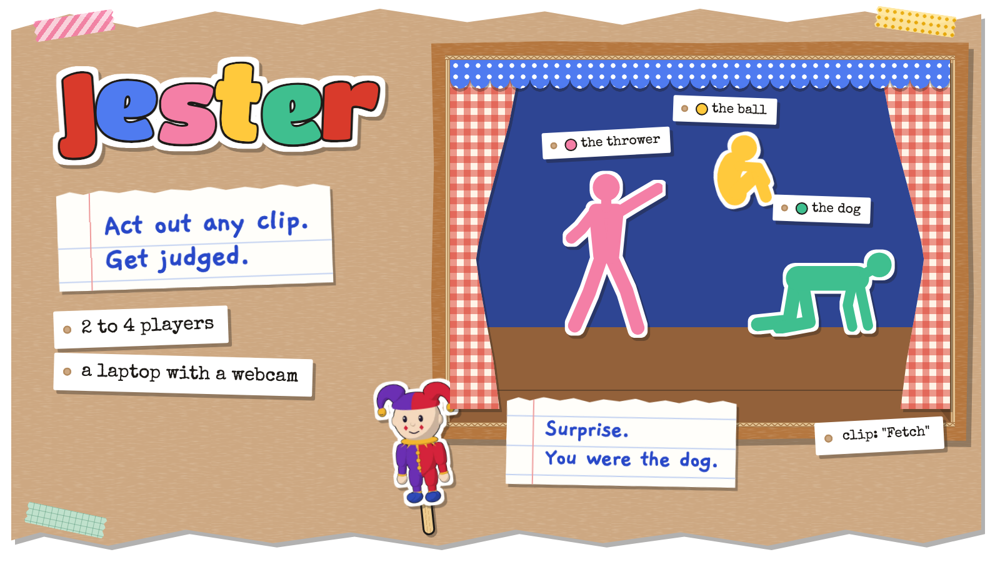
Jester turns a short clip into a party game. Each player secretly gets one part of the clip, say the thrower, the dog or the ball, and copies it on the webcam from nothing but a stick figure or an outline. Then the real clip plays back with everyone's cutouts on top, the scores come out, and a jester crowns the winner.
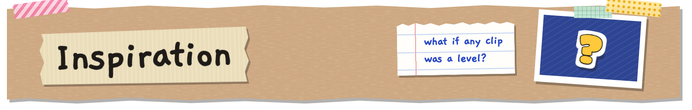
Webcam games where you copy a dancer are a known genre. When we looked, we found more than ten from past hackathons, three of which placed. [check]
They all share one limit: someone has to make every level by hand. We wanted the opposite. Drop in a short clip of anyone moving, and it becomes a level, with no one drawing it. Our one line for it: any video is now a game.
The second idea came from party games. What if nobody knows what they are copying until the end? You copy a stick figure, sure you are the dancer, and the reveal shows you were the dog. [check]
And one honest line about who it is for: it gets a group of friends moving around one laptop, with no equipment beyond a webcam.
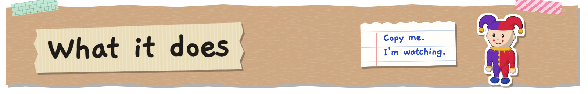
- Pick a clip from the video bank, or press Surprise me, and pick a mode: Blind, where nobody sees the clip until the end, or Watch first. [check: which clips are in the live bank]
- 2 to 4 players type their names, and Jester deals each one a secret part of the clip: a person in it, or a thing like a dog or a ball. [check: the live bank has clips with things in them]
- Pass the laptop. "Everyone else, look away." Each player sees only their part, drawn as a stick figure (a person) or an outline (a thing). They choose to copy it with their whole body, a hand, their head or a foot, and can watch it once before it counts.
- 3, 2, 1, copy. The part plays on the left, the player's camera on the right. The clip can be slowed to 0.75 or 0.5 speed.
- The reveal. After a drum roll, the original clip plays, then plays again with every player's cutout drawn on their part, with names and scores. It is recorded in the browser as a video you can save or send.
- The crown. Each player's face goes on a jester, a spotlight sweeps across them, and the winner gets crowned.
- Play with friends online. Make a room or join one with its 4-letter code. Each player plays their own part on their own device, and everyone gets the same reveal and results. Online rounds use our two built-in clips for now. [check: tried between two devices]
- Submit your own clip. It goes into a review queue, and a person checks every clip before it joins the bank.
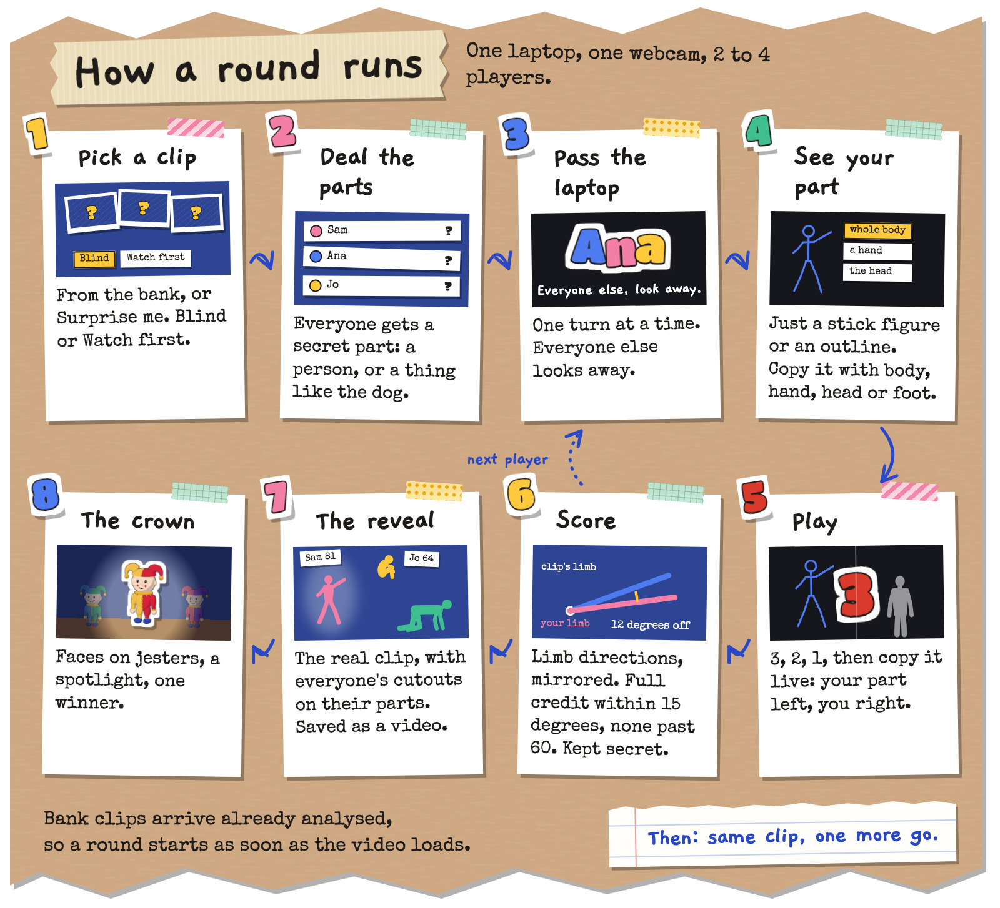
Online, each player is on their own device, so step 3 is skipped.
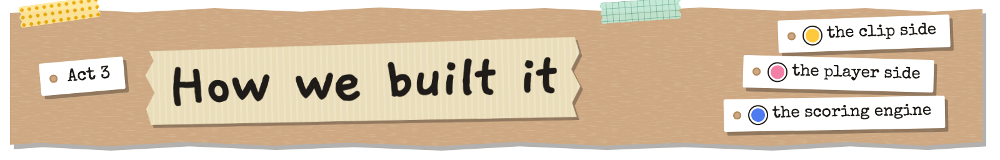
Three parts, three owners, and one shared format agreed in the first hours: pose-timeline/1, 33 body points per frame with real time stamps. Everything runs in the browser.
The clip side (Aaron) turns a video into one guide per subject.
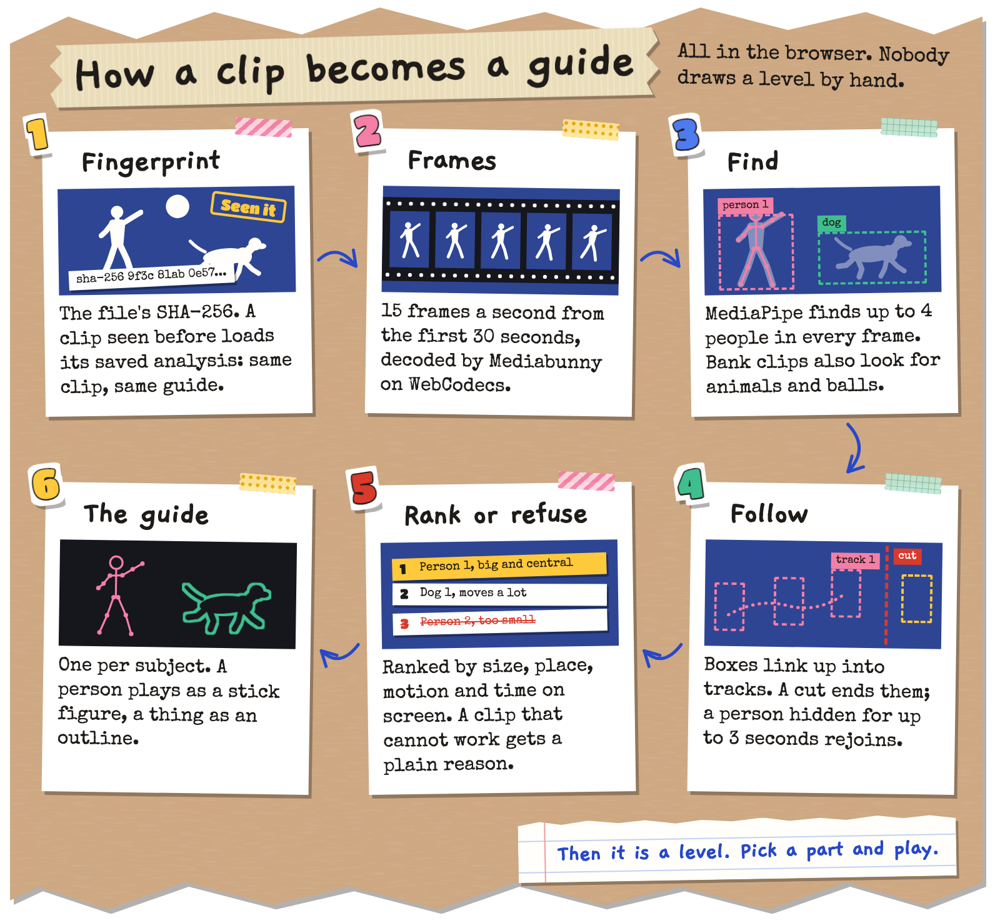
- The file's SHA-256 is its name. A clip seen before loads its saved analysis from the browser, so the same clip always gives the same guide.
- Frames are decoded at fixed times, 15 a second, with Mediabunny on WebCodecs. If the browser cannot decode the file, it falls back to stepping a video element.
- MediaPipe Pose Landmarker finds up to 4 people in every frame, and each person's mask becomes an outline. Clips prepared for the bank also run an object detector (EfficientDet-Lite0) on every 6th frame to find animals and balls.
- Boxes are linked into tracks by overlap. A camera cut ends every track, and a person hidden for up to 3 seconds is joined back up.
- Tracks are ranked by size, how central they are, how much they move and their time on screen. A clip that cannot work is refused with a plain reason, such as "No person found in this clip."
- Clips in the bank are analysed once ahead of time, so a round starts as soon as the video loads.
The player side (Lisa) reads the player from the webcam.
- MediaPipe Pose Landmarker in video mode. It tries the GPU first, then the CPU, and drops to the lite model below 18 frames a second.
- Hand Landmarker adds fingers to the mirror view. A One Euro filter smooths both.
- The models are cached in the browser and start loading on the start screen.
- Online rooms run over Supabase Realtime. Each device pings every 2 seconds, so a closed tab drops out after 10 seconds and the host role passes on, and every device starts the round at one time synced to the host's clock.
- Lisa also built the recording behind the reveal video. [check]
The scoring engine and the game (Alex) compare the two motions and run the round.
- The blind game deals the parts, runs each turn and cuts out the body part each player played from the tracker's mask, about 15 times a second, for the reveal.
- It compares the directions of 16 limbs, not positions, so height, body size and distance from the camera do not matter. The player is mirrored.
- A limb gets full credit within 15 degrees and none past 60.
- Both timelines are resampled to 30 frames a second, and one reaction delay is found for the whole turn, from 0.2 seconds early to 1.2 seconds late.
- The score pays for accuracy above what standing still would earn. When you really move with the clip, accuracy itself counts too, so standing still still scores low. Timing scales the result, and when the clip travels across the frame, a quarter of the score comes from where you are.
- A limb the clip uses but your camera cannot see caps the score at 50.
- Things, and single body parts, are scored on their path instead: how well your movement follows theirs, plus jumps, crouches and moves left or right.
The look (Aaron) is a scrapbook theatre. It has kraft paper, headings on masking tape, the jester's notes in blue ballpoint, ticket stubs for buttons, and a shoebox stood on its side as the stage. The jester himself is a 3D character built by a Python script in Blender and rendered to sprite strips in four colours. At the crown, each player's face, cropped from their own turn, goes on their jester.
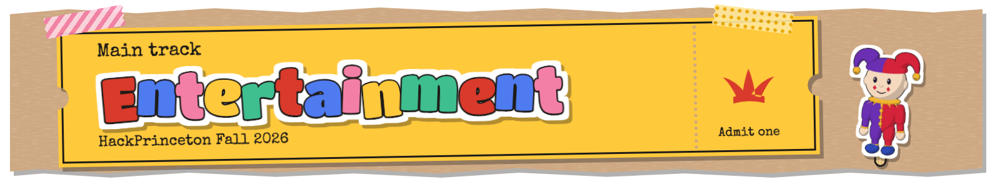
Why Jester is entertainment
- It is a party game first, built for a few friends around one laptop, with a jester as the host.
- The laugh is built in: secret parts mean you find out at the reveal that you were the dog.
- The retry loop: same clip, one more go, to beat a friend's score.
- New clips become levels without anyone drawing them, so the game does not run out of things to copy.
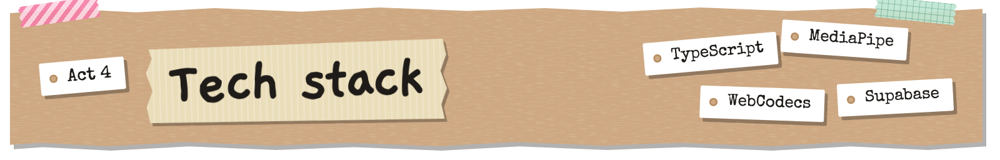
| Part | What we used |
|---|---|
| Language and build | TypeScript 5.7, Vite 6 |
| Body tracking | MediaPipe Tasks Vision 0.10.14: Pose Landmarker (lite, full), Hand Landmarker |
| Things in clips | MediaPipe Object Detector with EfficientDet-Lite0 |
| Video decoding | Mediabunny on WebCodecs, with a video element fallback |
| Saved analyses | IndexedDB, keyed by the file's SHA-256 |
| Reveal video | Canvas capture and MediaRecorder (WebM) |
| Clip submissions and rooms | Supabase (Storage, a table, Realtime) |
| Hosting | Vercel |
| The jester | Blender 5.2, scripted in Python, rendered with EEVEE |
| Fonts | Gaegu, Special Elite, Titan One (SIL Open Font License) |
| Tests | Node's built-in test runner |
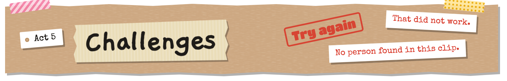
- Same clip in, same guide out. Our first stand-in read the clip from a playing video, timed by the wall clock, so the same file gave different guides. Now frames are decoded at fixed times and the analysis is saved under the file's fingerprint.
- One dancer, many tracks. People cross, turn and hide behind each other, and a tracker loses them. Early runs split one dancer into a pile of short tracks. Rejoining after gaps of up to 3 seconds, plus cut detection, fixed most of it. [check]
- Standing still must not score, but moving must. A naive pose score gives points for doing nothing, so the engine scores only what you add above standing still. Then blind mode scored every player 0 on gentle dance clips, where standing still already matches most of the pose. Engine 0.9.0 measures how much you actually moved with the clip, and when you did, counts your accuracy directly.
- Laptop cameras rarely see legs. Whole-body parts wait until you fit in frame. A hidden limb caps the score instead of being skipped, and you can choose to play a part with a hand, your head or a foot.
- Fast motion. At 15 frames a second, a sudden move can fall between frames. [check]
- Clips we are allowed to use. Most fun clips belong to someone else. No video lives in our repo, and the bank only takes clips that pass review. [check]
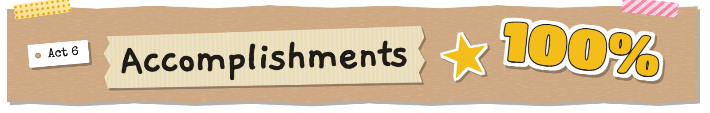
- A clip nobody prepared becomes a playable level in the browser. No server ever analyses video.
- Things count, not just people: a dog or a ball can be your secret part.
- The reveal puts everyone's cutout on the original clip and records it to a video you can send.
- 249 automated tests pass: 104 on the clip side, 71 in the engine, 66 in our first prototype and rooms, and 8 in the evaluation tools.
- A jester host of our own, from a Blender script, who wears each player's face at the crown.
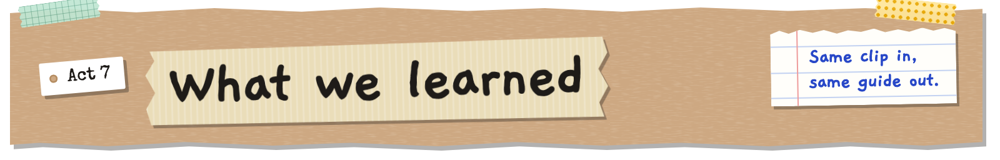
- Measure with code, decide with rules. Every number in a guide comes from the tracker, so a score can be explained.
- Repeatable takes design. It took fixed decode times, a fingerprint and a saved analysis, not luck.
- Compare directions, not positions. It makes size and distance from the camera disappear.
- Agree on the data first. One shared pose format, settled early, let three people build three parts at the same time. [check]
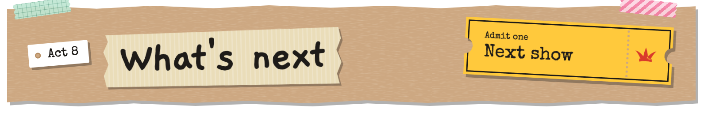
- An AI check for new clips. One vision model call per clip would name it, pick the main subject and word the refusals. It is designed, not built.
- Paste a link instead of a file. Grabbing a YouTube or Instagram clip from a browser tab already works on our lab page, but not yet in the game.
- Any clip online. Online rounds use our two built-in clips today; next is any clip from the bank.
- Duels. Head-to-head rounds, best of several, are built on a lab page, not yet in the game.
- A bigger bank, filled by players through Submit your own.
Links
- Play it: https://jester-pi.vercel.app
- Code: https://github.com/aaron-sulbaran/jester
- Demo video: [check: paste the YouTube link]
Credits
- Aaron Sulbaran: the clip side, the video bank and the look. Lisa Hadi: the webcam side, rooms and the reveal recording. Alex Huang: the scoring engine and the blind game. [check]
- MediaPipe from Google for pose, hand and object tracking; Mediabunny for decoding; Supabase; Vercel; Blender.
- Fonts: Gaegu, Special Elite and Titan One, under the SIL Open Font License.
- Built with AI coding assistants. Every change was reviewed by the team.